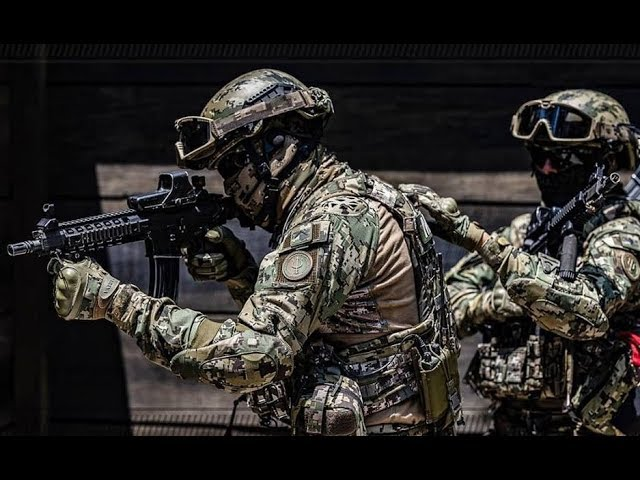

 FESCEN (Fuerzas Especiales del Centro), con base en la capital del país, cuyo propósito es poner a disposición del Cuartel General del Alto Mando un agrupamiento de tropas especiales para misiones críticas.